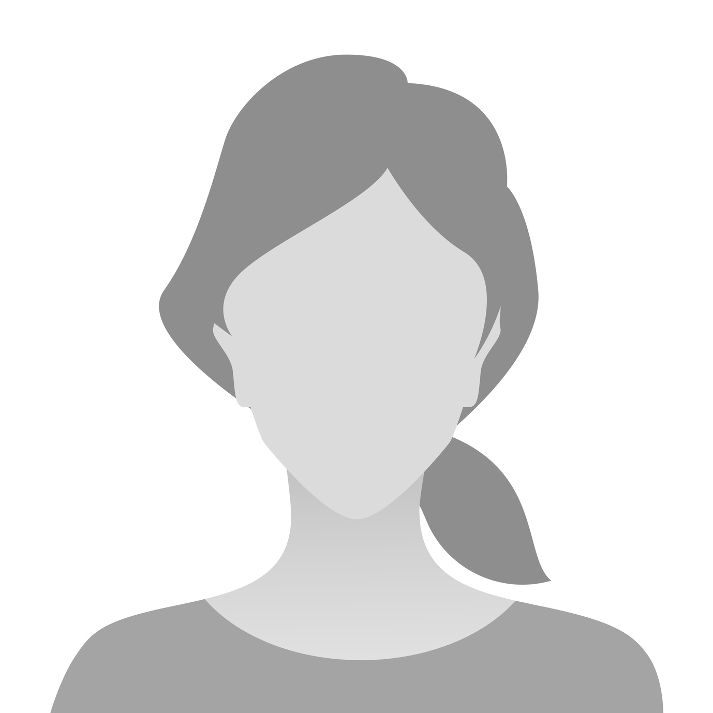

Pokud na nás máte jakýkoliv dotaz před svatbou, neváhejte se na nás obrátit:
Ženich
Max Kovykov
770 189 638
kovykmax@gmail.com

Nevěsta
Kateřina Matoušková
736 167 653
katka.mat@volny.cz
V den obřadu prosíme kontaktujte hlavně svědky:
Svědkyně nevěsty
Jana Matoušková
775 152 052
Svědek ženicha
Josef Boubín
739 624 731
Místo
Svatba se bud konat na Statku Smrčiny, který se nachází několik kilometrů od města Želiv. Přesnou polohu najdete
na mapě.
Doprava
Autem
Nejlepší způsob jak se na místo dopravit je autem. V okolí statku je dostatek místa na parkování pro všechny
hosty. Pokud víte, že máte v autě místo a chcete ušetřit planetu, můžete využít svatebního
car-sharingu.
Hromadnou dopravou
Hromadnou doprava až namísto bohužel nejede. Nejbližší rozumné spoje jedou do Humpolce. Pokud se nemáte jak na
místo dostat, dejte nám vědět a spolu to vymyslíme.
Ubytování
Ubytování na místě je možné ve vlastním stanu nebo na karimatce. Na statku je několik pokojů, které jsme
vyhradili především pro rodiny s malými dětmi. Těm kteří můžou počítat s vlastním pokojem se ozveme. Pokud na
vás nevyšel pokoj, nemáte vlastní stan nebo potřebujete půjčit karimatku, napište nám.
Dress-code
Zvolili jsme, dnešní době populární, tzv. "smart casual" dress-code. Především myslete na svoje pohodlí.
Slavnost
se odehrává na bývalém statku mezi poli a lesy ― tedy především nezpevněné povrchy. Mějte s sebou oblečení na
převlečení podle počasí a třeba na večer i k ohni.
Program
Rodiče s dětmi
Mezi účastníky svatby bude veliké množství rodičů s dětmi různých věkových kategorií (a my jsme jedni z nich).
Myslíme na vaše (a naše potřeby) a proto pro vás připravujeme:
Dětský koutek pro ty nejmenší
Samostatnou zábavu pro ty větší (na ven a v případě deště i dovnitř)
Odpočinkové místnosti (na spaní či kojení)
Vyhrazené WC a koupelny
Pokud máte nějaké speciální potřeby, neváhejte se na nás obrátit.